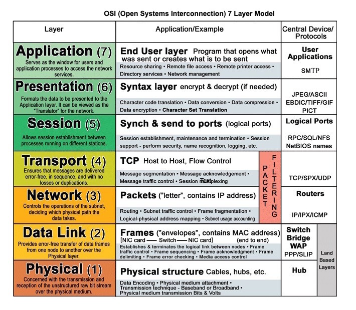
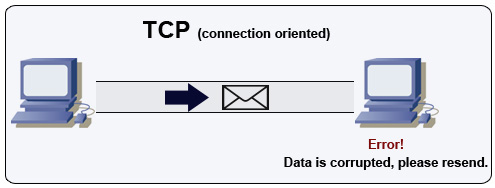
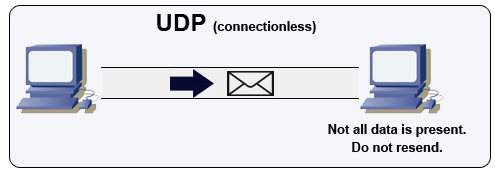
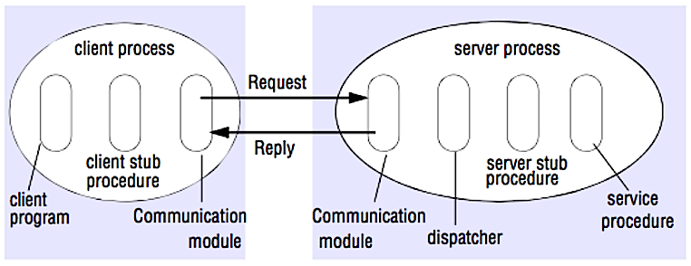

10 The System Design Primer — Study Path
How machines actually talk to each other: the transport protocols underneath everything (TCP, UDP), the request protocol on top of them (HTTP), and the two competing styles for designing an API (RPC, REST).

HTTP is a method for encoding and transporting data between a client and a server. It is a request/response protocol: clients issue requests and servers issue responses with relevant content and completion status info about the request. HTTP is self-contained, allowing requests and responses to flow through many intermediate routers and servers that perform load balancing, caching, encryption, and compression.
A basic HTTP request consists of a verb (method) and a resource (endpoint). Below are the common HTTP verbs:
| Verb | Description | Idempotent* | Safe | Cacheable |
|---|---|---|---|---|
| GET | Reads a resource | Yes | Yes | Yes |
| POST | Creates a resource or triggers a process that handles data | No | No | Yes if response contains freshness info |
| PUT | Creates or replaces a resource | Yes | No | No |
| PATCH | Partially updates a resource | No | No | Yes if response contains freshness info |
| DELETE | Deletes a resource | Yes | No | No |
*Can be called many times without different outcomes.
HTTP is an application layer protocol relying on lower-level protocols such as TCP and UDP — the two you'll meet next.

TCP is a connection-oriented protocol over an IP network. Connection is established and terminated using a handshake. All packets sent are guaranteed to reach the destination in the original order and without corruption through:
If the sender does not receive a correct response, it will resend the packets. If there are multiple timeouts, the connection is dropped. TCP also implements flow control and congestion control. These guarantees cause delays and generally result in less efficient transmission than UDP.
To ensure high throughput, web servers can keep a large number of TCP connections open, resulting in high memory usage. It can be expensive to have a large number of open connections between web server threads and, say, a memcached server. Connection pooling can help, in addition to switching to UDP where applicable.
TCP is useful for applications that require high reliability but are less time critical. Some examples include web servers, database info, SMTP, FTP, and SSH.

UDP is connectionless. Datagrams (analogous to packets) are guaranteed only at the datagram level. Datagrams might reach their destination out of order, or not at all. UDP does not support congestion control. Without the guarantees that TCP supports, UDP is generally more efficient.
UDP can broadcast, sending datagrams to all devices on the subnet. This is useful with DHCP because the client has not yet received an IP address, thus preventing a way for TCP to stream without the IP address.
UDP is less reliable but works well in real time use cases such as VoIP, video chat, streaming, and realtime multiplayer games.

In an RPC, a client causes a procedure to execute on a different address space, usually a remote server. The procedure is coded as if it were a local procedure call, abstracting away the details of how to communicate with the server from the client program. Remote calls are usually slower and less reliable than local calls, so it is helpful to distinguish RPC calls from local calls. Popular RPC frameworks include Protobuf, Thrift, and Avro.
RPC is a request-response protocol:
Sample RPC calls:
RPC is focused on exposing behaviors. RPCs are often used for performance reasons with internal communications, as you can hand-craft native calls to better fit your use cases.
HTTP APIs following REST tend to be used more often for public APIs.
REST is an architectural style enforcing a client/server model where the client acts on a set of resources managed by the server. The server provides a representation of resources and actions that can either manipulate or get a new representation of resources. All communication must be stateless and cacheable.
There are four qualities of a RESTful interface:
Sample REST calls:
REST is focused on exposing data. It minimizes the coupling between client/server and is often used for public HTTP APIs. REST uses a more generic and uniform method of exposing resources through URIs, representation through headers, and actions through verbs such as GET, POST, PUT, DELETE, and PATCH. Being stateless, REST is great for horizontal scaling and partitioning.
| Operation | RPC | REST |
|---|---|---|
| Signup | POST /signup | POST /persons |
| Resign | POST /resign {personid:1234} | DELETE /persons/1234 |
| Read a person | GET /readPerson?personid=1234 | GET /persons/1234 |
| Read a person's items | GET /readUsersItemsList?personid=1234 | GET /persons/1234/items |
| Add an item | POST /addItemToUsersItemsList {personid,itemid} | POST /persons/1234/items {itemid} |
| Update an item | POST /modifyItem {itemid,key,value} | PUT /items/456 {key,value} |
| Delete an item | POST /removeItem {itemid} | DELETE /items/456 |
Source: Do you really know why you prefer REST over RPC